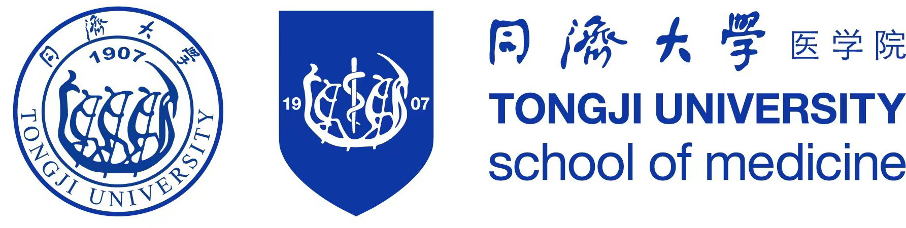
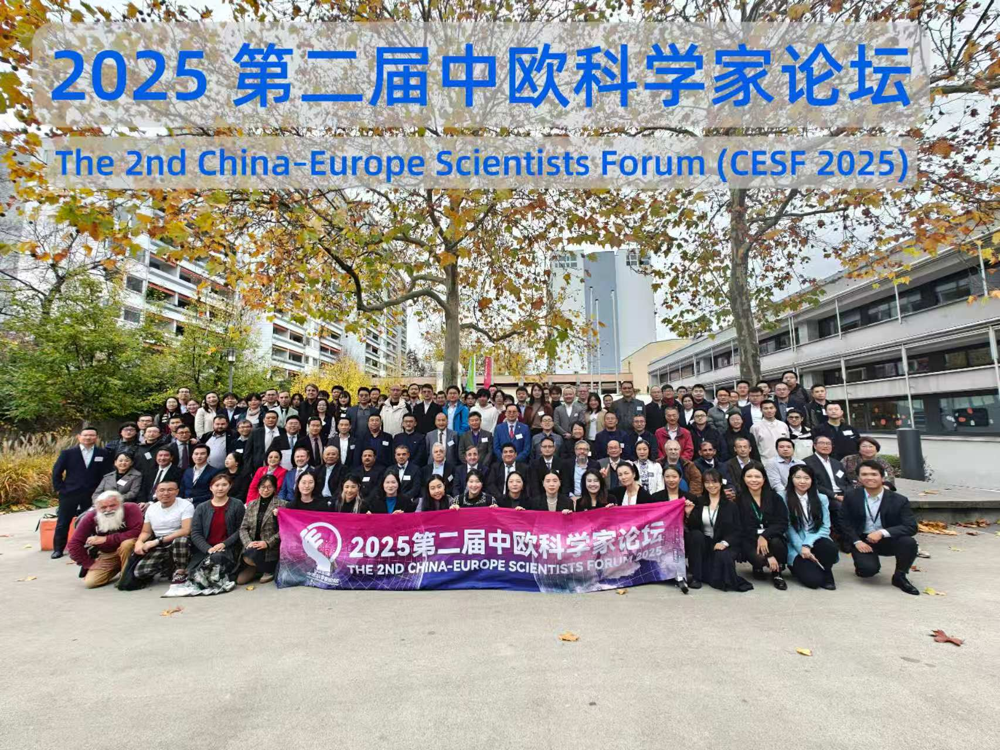

参会对象青年医师与科研学者
SCDSG
FORUM
2026
YOUNG CHINESE MEDICAL SCHOLARS FORUM IN GERMANY
汇聚青年医学研究，促进中德学术交流。
论坛覆盖基础医学、临床医学、转化研究及医学人工智能等领域，通过主旨报告、青年学者报告、壁报交流与专家评议，搭建中德青年医学学术交流平台。
拟定会期
2026 年 10–11 月
德国海德堡｜线下为主，线上同步
会议规模现场 50–80 人，并开放线上参与
核心舞台2 场 Keynote · 10 场青年报告
会议语言学术报告以英文为主｜交流环节可使用中文、德文或英文
ABOUT THE FORUM
面向青年医学与生命科学研究者的学术交流平台
论坛主要面向在德国从事医学与生命科学研究或临床工作的博士研究生、博士后、青年研究人员及医师，并欢迎中德医学合作相关人员参与。论坛旨在为高质量研究提供专业展示与同行评议机会，促进学术反馈、方法交流及潜在合作。
拟邀主旨讲者将围绕脑肿瘤研究、精准医学及临床转化等方向作专题报告。
论坛计划遴选 10 项口头报告，并设置壁报交流及专家现场评议环节。
推动德国科研机构、临床医疗体系与中国医学院校之间的专业协作。
拟邀主旨讲者与评审专家
邀请推动基础发现与临床转化的学者分享前沿成果及专业判断。
以下人员为拟邀人选，尚未确认出席。正式 Faculty 名单及出席信息以协会后续公告为准。
拟邀 KEYNOTE
01 / DKFZ
刘海坤 博士｜拟邀主旨讲者
德国癌症研究中心 · 分子神经遗传学部门负责人主要研究方向包括脑肿瘤干细胞生物学、肿瘤休眠机制、患者来源类器官模型及精准治疗策略。其团队综合应用单细胞组学、CRISPR/Cas9 基因编辑及人工智能方法，解析胶质母细胞瘤的分子与细胞异质性。
查看 DKFZ 官方资料 ↗
拟邀 KEYNOTE II02 / TONGJI UNIVERSITY SCHOOL OF MEDICINE
同济大学医学院专家｜人选待定
拟由合作医学院选派专家作第二场主旨报告具体讲者及报告主题将在双方完成学术与会务确认后公布。本席位目前仅作为会议方案中的拟邀安排，不代表任何个人已确认出席。
了解拟合作医学院 ↗
拟邀专题讲者
03 / UKHD · FEATURED FACULTY
孔波 医学博士｜拟邀专题讲者
海德堡大学医院普外、消化与移植外科高级主治医师（Oberarzt）其工作聚焦胰腺疾病外科及转化研究，贯通基础机制解析、患者分层与临床决策优化。
查看 UKHD 官方资料 ↗拟邀科学评议孙崇教授 · DKFZ
研究方向：肿瘤免疫调控及免疫治疗机制
拟邀科学评议周小波教授 · Mannheim
研究方向：心血管机制、内皮功能及电生理
更多嘉宾持续更新中
论坛拟组建由 5–8 位德国科研机构、大学医院及合作医学院专家构成的科学评审委员会。
会议议程概览
会议议程将依次围绕研究发现、成果展示、专业讨论及合作连接展开。
以下为初步日程，最终安排以正式会议通知为准。
SATURDAY
青年科学主场
13:00—18:00 · Heidelberg
OPENING
论坛开幕及欢迎致辞
主办单位、合作伙伴及特邀嘉宾欢迎致辞
KEYNOTE I + II
医学与生命科学前沿主旨报告
每场主旨报告 25 分钟，另设 5 分钟讨论
YOUNG INVESTIGATORS · I
青年研究者口头报告专场
本环节安排 5 位入选者，每人报告 15 分钟并接受 5 分钟问答
POSTER & COFFEE
学术壁报展示与现场交流
设置快速报告、专家点评及开放讨论环节
YOUNG INVESTIGATORS · II
青年研究者口头报告专场
继续安排 5 位入选青年学者进行口头报告
RECOGNITION
科学委员会总结及奖项颁发
颁发青年科学家奖、优秀学术报告奖及优秀学术壁报奖
SCIENTIFIC TRACKS
议题覆盖基础实验研究、临床医学、转化医学及计算医学等方向。
基础医学与细胞生物学
Cell biology · Neuroscience · Immunology
临床医学及患者导向研究
Clinical studies · Diagnostics · Surgery
转化医学与精准诊疗
Biomarkers · Organoids · Therapeutics
医学 AI 与交叉创新
AI · Imaging · Biomedical Engineering
药物科学与生物医药研究
Drug discovery · Delivery · Biotechnology
CALL FOR ABSTRACTS · NOW OPEN
欢迎提交医学与生命科学研究摘要，并在海德堡进行学术展示。
所有投稿将接受匿名学术评审，综合排名前 10 的摘要将获邀进行口头报告；其余高质量投稿将根据评审结果进入 Poster Walk 或 Poster Flash Talk 环节。
投稿格式
英文 · 不超过 300 词
- 原创医学或生命科学研究
- 摘要采用匿名学术评审
- 口头报告 15 分钟 + 5 分钟问答
- 壁报快速报告时长为 3 分钟，另设 2 分钟问答
重要日期
YOUNG SCIENTIST RECOGNITION
表彰兼具研究质量、创新价值与学术表达能力的青年学者。
评选工作拟由协会与合作医学院共同组织，评价维度包括科学质量、创新程度、学术表达及未来研究潜力。优胜者拟获邀参加同济大学青年论坛，并按活动安排报销食宿、给予奖励。
计划评选 5 名获奖者，提供奖金、联合证书及学术传播支持；优胜者拟获邀参加同济大学青年论坛，并按活动安排报销食宿、给予奖励。
ORGANISERS & PROPOSED PARTNER
依托旅德华人医学与生命科学网络，促进中德医学交流与协作。
协办及合作单位的状态将根据正式确认结果动态更新；页面提及的 DKFZ、UKHD 及 Mannheim 现阶段仅用于说明拟邀专家的机构归属，不代表相关机构已确认参与协办。
旅德华人医师学者协会（SCDSG）
旅德华人医师学者协会是一家于 2015 年发起并于 2016 年在海德堡正式成立的非营利学术组织，服务于德国、欧洲及中国的华人医学与生命科学专业群体。
了解协会 ↗同济大学医学院｜拟重点合作单位
同济医学的历史可追溯至 1907 年创办的德文医学堂，长期以来持续推动中德医学教育、科研及人才交流。学院拥有覆盖基础医学、临床医学、转化医学和医学交叉创新的教学科研体系，并依托多家附属医院开展临床与转化研究。
- 拟选派一位医学院专家作 Keynote Lecture II
- 拟共同参与摘要评审、青年学者奖项及联合证书
- 优胜者拟获邀参加同济大学青年论坛，并按活动安排报销食宿、给予奖励
ABSTRACT SUBMISSION
提交研究摘要，申请口头报告或壁报展示。
投稿表收集题目、研究方向、英文摘要、关键词、个人简历及可选研究图片。结构化信息与文件将保存至协会的私有投稿数据库，供学术委员会评审与会务联络使用。
FAQ
参会常见问题
谁可以投稿和参会？
主要面向在德华人博士后、博士研究生、青年 PI 和青年医师，也欢迎中德医学合作人员及受邀嘉宾参加。
投稿和报告使用什么语言？
投稿摘要及正式学术报告原则上须使用英文；讨论与交流环节可使用中文、德文或英文，详细语言规范将在投稿指南中说明。
可以在线参加吗？
论坛拟采用以海德堡线下会议为主、线上同步参与为补充的形式。最终举办形式、技术平台及线上接入方式将在正式会议通知中公布。
Keynote 和合作单位已经确认了吗？
目前尚未完成正式确认程序。当前页面所列讲者与同济大学医学院均为会议方案中的拟邀或拟合作对象，尚不代表正式确认。完成正式确认后，页面将移除“拟邀/拟协办”状态，并同步发布官方公告。
